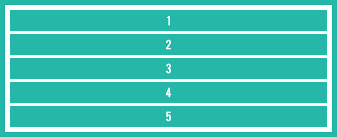
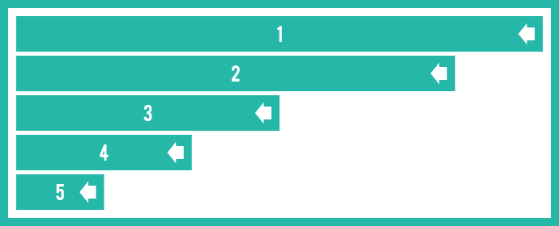
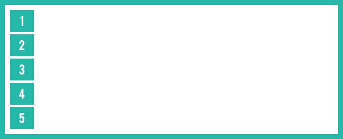

Last in First Out CSS Transitions
In this tutorial, we explore a CSS transition trick that I love that implements a last in, first out transition sequence.
Introduction
In modern websites and applications, interactions and UX play a huge part in consumer retention. CSS animations have paved the way for us as far as enhancing user experiences goes, but it can be taken a step further with a little thought. In this tutorial, we’re going to build what I like to call a “last in, first out” item animation, or a “stack” animation. What this means is that when some sort of toggle action is hit, items animate into view in a sequence. When the toggle action is hit again, the items animate out of view in a reverse sequential order (in relation to the animation in). I’ll demonstrate it with some basic divs, but the application of this trick is what matters.
A Visual Representation
To understand more clearly what we’re trying to achieve, let’s step through the process with some images. At a neutral, or base state, all of our divs - let’s call them bars - are occupying a small amount of fixed space. Here’s a representation:

Imagine now that we’ve hit a toggle button of sorts, and we want all the bars to expand sequentially to 100% width. Here’s a visualization of that in action:
When all bars have finished transitioning, they should occupy the full width of their container:

At this point, hitting the toggle again should transition the bars back out, but in a reverse sequential order. That is, the last bar to transition in should be the first bar to transition out. Here’s a visual representation:

Finally, when this transition ends, all bars should return to their original state, as represented by the first image:

Setting Up The Demo
Let’s get a simple set up going on for our demonstration. The markup is fairly simple, with a containing element (c-bars) and 5 child elements (c-bars__bar). We’ll also have a toggle button that will toggle an is-expanded class on all bars. Here’s the HTML:
<button class="c-btn">Toggle</button>
<div class="c-bars">
<span class="c-bars__bar">1</span>
<span class="c-bars__bar">2</span>
<span class="c-bars__bar">3</span>
<span class="c-bars__bar">4</span>
<span class="c-bars__bar">5</span>
</div>
The JavaScript to toggle the class is really straightforward as well:
<script>
var btn = document.querySelector('.c-btn');
var bars = document.querySelectorAll('.c-bars__bar');
btn.addEventListener('click', function() {
for (var i = 0; i < bars.length; i++) {
bars[i].classList.toggle('is-expanded');
}
});
</script>
In a real world application, your script may look much different. The point here is that hitting some sort of toggle switch toggles the is-expanded class to all elements in question.
Base Styling
Now that our markup is good to go, let’s add some basic CSS. Our bars container will be visible via a border, and each bar will be a block element with an initial width. Because we’re transitioning the width of the bars from initial to 100%, we’ll have to apply that transition property as well. Here’s some CSS:
.c-bars {
padding: 12px;
border: solid 4px #25b7a8;
}
.c-bars__bar {
display: block;
margin: 0 0 12px 0;
padding: 2px 0;
width: 24px;
color: #fff;
background-color: #25b7a8;
text-align: center;
transition: width 0.5s;
}
.c-bars__bar:last-child {
margin-bottom: 0;
}
As mentioned above, the is-expanded class will be toggled on the bars when the button is clicked. This is where we can apply the width change to the bars:
.c-bars__bar.is-expanded {
width: 100%;
}
At this point, clicking the button should invoke the transition, with all bars transitioning smoothly from their initial width to 100%. Clicking again will revert them to their initial width.
Trick #1 - Applying Sequential Transitions
As it stands, all elements transition in and out at the exact same time. In order to invoke the transitions sequentially, we need to use the transition-delay property. We know we have 5 bars, so let’s target each of them with the nth-child selector, and delay each bar by 0.1s. Here’s the additional CSS:
.c-bars__bar:nth-child(1) {
transition-delay: 0s;
}
.c-bars__bar:nth-child(2) {
transition-delay: 0.1s;
}
.c-bars__bar:nth-child(3) {
transition-delay: 0.2s;
}
.c-bars__bar:nth-child(4) {
transition-delay: 0.3s;
}
.c-bars__bar:nth-child(5) {
transition-delay: 0.4s;
}
Try toggling again. This time, the first bar starts transitioning immediately, and every bar after that starts transitioning 0.1s later than the previous one. This is a great step! However, when you click the button again and the is-expanded class gets removed, you’ll notice that they transition out in the same order that they transitioned in. This isn’t quite what we want, so let’s take a look at trick #2.
Trick #2 - Last In, First Out
In order to achieve the “last in, first out” transition pattern, we need to assess two states of the demo. The first is the initial state, and the second is the expanded state. We already saw how to transition the bars sequentially from the initial to the expanded state. When they are expanded, we essentially need to revers the transition-delay properties on each bar. Luckily, achieving that is very simple.
When we click the toggle button, the is-expanded class gets immediately added to the elements. That means that while they are transitioning in, they have the is-expanded class. When the bars are expanded and the button gets clicked again, the class gets immediately removed from all of the bars. This presents us with an opportunity to target both transitional phases:
- Transition delays from initial to expanded should be applied to the
is-expandedclass. - Transition delays from expanded to initial should be applied to the base class.
With that in mind, here’s the modified CSS:
.c-bars__bar:nth-child(1) {
transition-delay: 0.4s;
}
.c-bars__bar.is-expanded:nth-child(1) {
transition-delay: 0s;
}
.c-bars__bar:nth-child(2) {
transition-delay: 0.3s;
}
.c-bars__bar.is-expanded:nth-child(2) {
transition-delay: 0.1s;
}
.c-bars__bar:nth-child(3) {
transition-delay: 0.2s;
}
.c-bars__bar.is-expanded:nth-child(3) {
transition-delay: 0.2s;
}
.c-bars__bar:nth-child(4) {
transition-delay: 0.1s;
}
.c-bars__bar.is-expanded:nth-child(4) {
transition-delay: 0.3s;
}
.c-bars__bar:nth-child(5) {
transition-delay: 0s;
}
.c-bars__bar.is-expanded:nth-child(5) {
transition-delay: 0.4s;
}
Check out the two transitional states now - voila! You’ve successfully implemented the last in, first out transition technique, and it looks awesome.
Simplification With Sass
There is a fundamental mathematical nature involved in creating this transition effect, which means that Sass (or any CSS pre-processor with looping and variables) can be of great assistance. The Sass block that I used to generate the CSS was as simple as this:
$n: 5;
$delay: 0.1;
@for $i from 1 through $n {
$in: $delay * ($i - 1);
$out: $delay * ($n - $i);
.c-bars__bar:nth-child(#{$i}) {
transition-delay: #{$out}s;
}
.c-bars__bar.is-expanded:nth-child(#{$i}) {
transition-delay: #{$in}s;
}
}
Simply changing $n (the number of items) and $delay (the transition delay) will update the entire output for you.
Wrap Up
And that’s a wrap! We just took on an awesome, small challenge in CSS, creating sequentially stacked transitions. Thanks again for reading, and if you have and questions, comments, or feedback, feel free to send me a tweet.